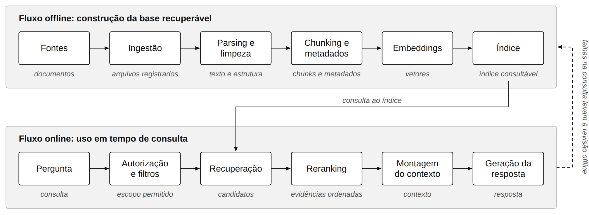
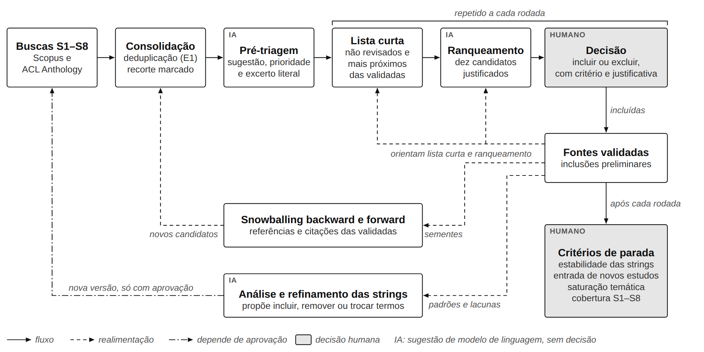
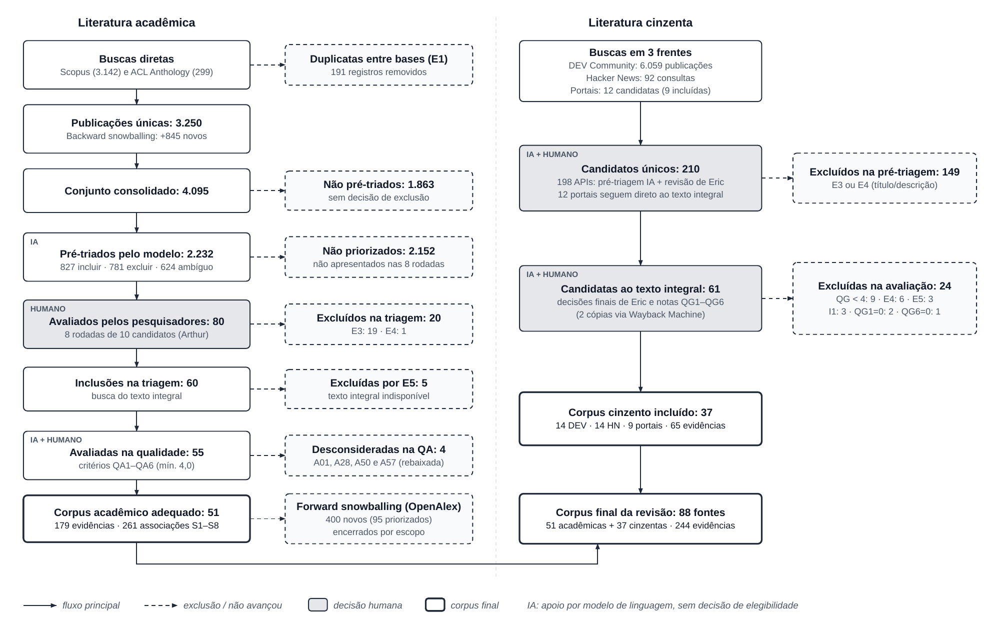
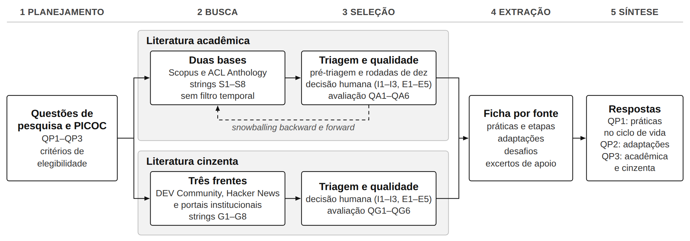
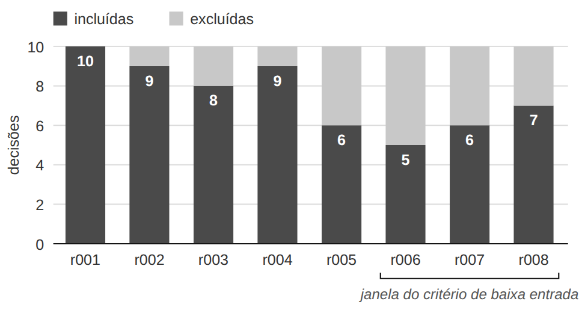

Engenharia de Dados em Sistemas RAG: Práticas, Desafios e Adaptações
Em números
Questões de pesquisa e PICOC
Quais práticas de engenharia de dados são relatadas em sistemas RAG e como se distribuem ao longo do ciclo de vida dos dados?
QP2Quais adaptações e desafios são relatados na aplicação dessas práticas em sistemas RAG?
QP3Quais práticas, adaptações e desafios de engenharia de dados em sistemas RAG são relatados na literatura acadêmica, na literatura cinzenta ou em ambas?
A unidade de análise é uma prática ou um desafio de engenharia de dados associado ao ciclo de vida de sistemas RAG.
| Elemento | Definição |
|---|---|
| População | Sistemas RAG. |
| Interesse | Práticas de engenharia de dados aplicadas à construção, operação, manutenção e governança de sistemas RAG. |
| Comparação | Distribuição dos achados entre literatura acadêmica e cinzenta; quando documentado, contraste com outros contextos de engenharia de dados. |
| Resultados | Práticas e sua distribuição no ciclo de vida, variações, adaptações documentadas e desafios associados. |
| Contexto | Desenvolvimento e operação de sistemas RAG em contextos acadêmicos e industriais. |
Desenho do estudo e figuras
O mapa interativo detalha cada passo: quem age (script, IA ou pesquisadores), os números de cada etapa, o comando que a executa e os arquivos que a registram no repositório.
Visão geral →
As cinco fases e os dois caminhos, acadêmico e cinzento.
Pipeline RAG →
O objeto de estudo, com cada passo ligado às etapas S1–S8 e às fontes incluídas.
Seleção acadêmica →
O ciclo de rodadas, com pré-triagem, ranqueamento, decisão humana e snowballing.
Literatura cinzenta →
DEV Community, Hacker News e portais institucionais, até as 37 fontes incluídas.
Qualidade e extração →
Texto integral, QA1–QA6, QG1–QG6 e a ficha de extração.
Implementação →
Como o repositório implementa o loop e onde fica cada registro.
Figuras do artigo
Numeração e legendas correspondentes ao PDF atual do manuscrito.






Diagramas complementares do site
Materiais visuais de apoio à documentação pública, não numerados como figuras do artigo.




Strings de busca
Uma família por etapa do ciclo de vida. Na busca acadêmica, cada família combina BLOCO-RAG AND BLOCO-ETAPA. Na cinzenta, as famílias G1–G8 acrescentam o BLOCO-TIPOLOGIA. Adaptações a cada mecanismo ficam registradas no protocolo.
| ID | Etapa | BLOCO-ETAPA (precedido de BLOCO-RAG AND) |
|---|
BLOCO-RAG
("retrieval augmented generation" OR "retrieval-augmented generation")BLOCO-TIPOLOGIA (G1–G8)
("technical guide" OR "technical documentation" OR "engineering blog" OR "white paper" OR "technical report" OR "reference architecture" OR "case study" OR "best practices")Scopus: TITLE-ABS-KEY. ACL Anthology: título e resumo normalizados sobre o snapshot e4d087a11bc0. ACM Digital Library: só o campo Abstract, em consultas exploratórias. DEV Community e Hacker News: expressões aplicadas localmente ou decompostas termo a termo; o bloco de tipologia não pôde ser aplicado como filtro.
Critérios de elegibilidade
Inclusão
Exclusão
Avaliação de qualidade
Escala 0 / 0,5 / 1 por critério, máximo 6,0 e mínimo 4,0. Métricas bibliométricas não entram na avaliação.
Acadêmica (QA)
Zero em QA2 e QA3 ao mesmo tempo desclassifica a fonte, qualquer que seja a soma.
Cinzenta (QG)
Adaptação das diretrizes de Garousi et al. (2019). A reputação da organização não substitui a avaliação.
Busca, seleção e extração
| Família | Scopus | ACL | DEV (cand.) | HN (cand.) |
|---|---|---|---|---|
| Únicos | 3.142 | 299 | 104 | 94 |
Descoberta e seleção acadêmica
Os 1.863 registros não pré-triados permanecem no conjunto como não revisados, sem decisão de exclusão.
Decisões humanas por rodada
Dez candidatos por rodada, de 25 a 27/09/2026.
As três últimas rodadas somaram 18 inclusões, então o indicador de baixa entrada não foi atendido. A descoberta foi encerrada por decisão humana com base em estabilidade das strings, saturação temática e cobertura.
Associações de evidências válidas por etapa
Extração sobre 88 fontes finais: 51 acadêmicas e 37 cinzentas. As 179 evidências acadêmicas geraram 261 associações às etapas S1–S8 (até três por evidência); as 65 evidências cinzentas receberam uma única etapa cada.
| Seleção da literatura cinzenta | Quantidade |
|---|---|
| Candidatos únicos das APIs (DEV Community e Hacker News) | 198 |
| Candidatos dos portais institucionais | 12 |
| Excluídos na pré-triagem por título e descrição (E3 ou E4) | 149 |
| Candidatas encaminhadas à avaliação do texto integral | 61 |
| Excluídas por pontuação inferior a 4,0 | 9 |
| Excluídas por E4 após a avaliação do texto integral | 6 |
| Excluídas por E5 | 3 |
| Excluídas por elegibilidade temporal indeterminada (I1) | 3 |
| Excluídas por autoria não identificável (QG1 = 0) | 2 |
| Excluída por QG6 = 0 | 1 |
| Fontes incluídas | 37 |
| Snowballing | Quantidade |
|---|---|
| Backward snowballing (Scopus, visão REF): 9 execuções com recuperação de referências (8 concluídas sem erros e 1 parcialmente concluída) | 905 |
| … registros novos após consolidação | 845 |
| Forward (OpenAlex, 14/11/2026): trabalhos ≥ 2024 que citam as 52 sementes então adequadas, antes do rebaixamento de A57 | 426 |
| … candidatos novos | 400 |
| … sem RAG no título nem no resumo (sugestão de exclusão por I2) | 158 |
| … pré-triagem por título: incluir / ambíguo / excluir | 71 / 24 / 147 |
Dos 400 candidatos novos do forward, 95 foram priorizados (71 incluir e 24 ambíguos na pré-triagem por título), não receberam avaliação individual e nenhum dos 400 foi incorporado por encerramento de escopo e recorte temporal.
As 80 decisões da triagem acadêmica
Cada linha é um candidato apresentado aos pesquisadores, com a decisão, o critério de exclusão, a justificativa humana e a justificativa do ranqueamento por IA. As etapas vêm da pré-triagem e são conferidas na leitura integral. Clique em uma linha para ver as justificativas.
| Rodada | Fonte | Decisão |
|---|
Dados: triagem.json, gerado por scripts/build_pages_data.py a partir de data/review/decisions.jsonl, dos rankings das rodadas e da pré-triagem. Resumos não são publicados, conforme os termos da API da Elsevier.
O que a IA fez e o que ficou com os pesquisadores
| Passo | Modelo e instrução | Papel |
|---|---|---|
| Pré-triagem acadêmica | claude-opus-5-5 (1.647 registros) e codex-gpt-5 (585), instrução mlr-screening-v2 | sugere sugestão, prioridade, etapas, dimensões, excerto literal |
| Ranqueamento das rodadas | codex-gpt-5, instrução mlr-ranking-v1 | sugere dez candidatos justificados por rodada |
| Refinamento das strings | skill mlr-refinement | sugere proposta q2, não aprovada |
| Pré-triagem cinzenta, notas QA e QG, extração | claude-opus-5-5 | sugere sujeito à conferência dos pesquisadores |
| Inclusão, exclusão, aprovação de strings, parada | — | decide pesquisadores |
Todos os 80 candidatos apresentados tinham sugestão de inclusão com prioridade alta; os pesquisadores divergiram em 20 casos (25%), que resultaram em exclusão.
Como reproduzir e onde está cada registro
Instalação
git clone https://github.com/Arthrok/metodologia-tcc.git
cd metodologia-tcc
python3.12 -m venv .venv && source .venv/bin/activate
pip install -r requirements.txt
cp .env.example .env # SCOPUS_API_KEY e, se houver, SCOPUS_INST_TOKEN
pytest # 97 testes, nenhum acessa a redeRefazer as coletas
python scripts/collect_acl.py
python scripts/collect_scopus.py
python scripts/report.pyResumos e referências da Scopus exigem acesso institucional (rede da UnB ou túnel SOCKS com HTTPS_PROXY).
Retomar o loop num clone novo
python scripts/collect_acl.py && python scripts/collect_scopus.py
python scripts/review_loop.py snowball --direction backward
python scripts/review_loop.py sync
python scripts/review_loop.py statusA pré-triagem e as decisões versionadas continuam válidas: os identificadores P-xxxxxxxxxxxx são hashes do DOI ou do título normalizado.
config/search_queries.yamlstrings S1–S8, versão atual
config/review_protocol.yamlQPs, PICOC, critérios, parâmetros das rodadas e da parada
data/manifests/cada coleta e cada execução de snowballing
data/review/decisions.jsonlas 80 decisões humanas
data/review/pretriage/pretriage.jsonlsugestões da IA, com modelo e excerto
data/review/rounds/os dez escolhidos pela IA em cada rodada
data/review/workspace.jsonrodadas, versões das strings e do protocolo
.claude/skills/instruções seguidas pelo modelo em cada passo
Limitações que afetam a leitura dos resultados
- A pré-triagem alcançou 2.232 dos 4.095 registros, e só registros sugeridos para inclusão com prioridade alta chegaram à revisão humana. As 80 decisões não equivalem à avaliação de todo o conjunto.
- A descoberta acadêmica consolidada ocorreu na Scopus e na ACL Anthology; ACM e IEEE tiveram só consultas exploratórias.
- O recorte a partir de 2024 pode deixar de fora práticas documentadas antes disso.
- As APIs da DEV Community e do Hacker News não aplicam as expressões Booleanas originais; a cobertura não é equivalente à das strings.
- Várias fontes cinzentas vêm de fornecedores que promovem os próprios produtos; isso foi registrado como possível viés comercial.
- Notas de qualidade e extração foram atribuídas com apoio do modelo e dependem da conferência dos pesquisadores. A revisão humana da pré-triagem cinzenta e a auditoria dirigida não produziram registro individualizado de cada conferência; o material suplementar indica o que cada arquivo documenta.
- A codificação das 244 evidências nos temas da QP3 e o vínculo de cada evidência com as tabelas QP1–QP3 estão em suplemento/Registros_MLR.xlsx.
Referência
@misc{melo_gomes_rag_de,
author = {Melo, Arthur Alves and Gomes, Eric Silveira},
title = {Engenharia de Dados em Sistemas {RAG}: Pr{\'a}ticas, Desafios e Adapta{\c{c}}{\~o}es},
note = {Material complementar e trilha de auditoria},
institution = {Universidade de Bras{\'i}lia, Faculdade do Gama},
year = {2026},
url = {https://arthrok.github.io/metodologia-tcc/}
}